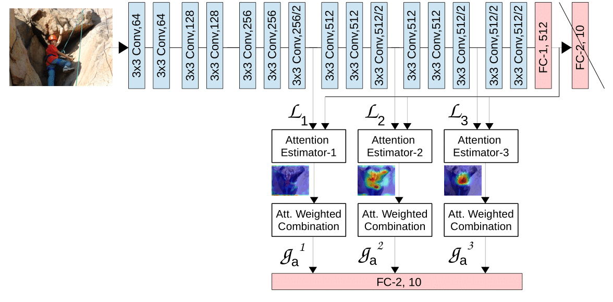
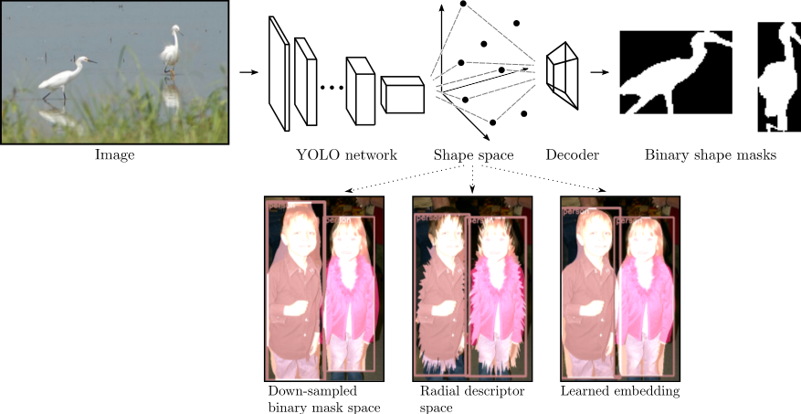
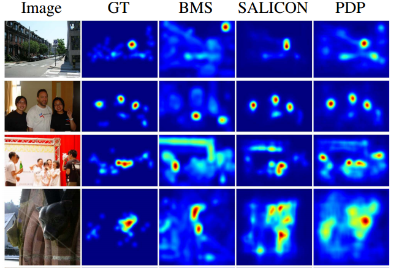
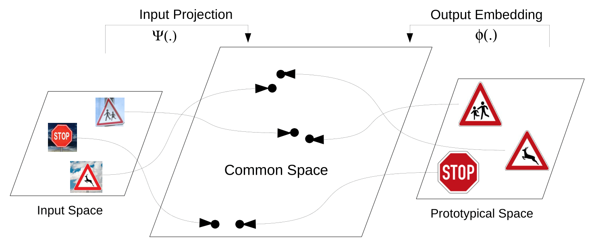

Saumya Jetley
I am a final year PhD student under Prof. Philip Torr generously funded by the ERC research grant to pursue research in 'AI for scene understanding' at the University of Oxford.
My research covers the broad themes of computer vision, machine learning and deep learning. I have worked on topics of human saliency estimation, object recognition, instance segmentation and attention modelling in deep neural nets. My recent work focuses on explaining the adversarial phenomenon observed in deep neural networks for image classification.
News
- 10/18: Excited to be giving a talk on my research work and academic journey at an event jointly organised by EF and Researc/hers code. Slides here.
- 10/18: Grateful to be receiving the WiML travel award, looking forward to the workshop.
- 10/18: Grateful to be receiving the NIPS travel award.
- 09/18: Our paper explaining adversarial vulnerability in deep neural nets is accepted at NIPS'18. (With friends like these..)
- 08/18: I am co-organising the 'Frontiers of Computer Vision' track at the Deep Learning Indaba'18.
- 06/18: I will be the outreach officer with OxWoCS for the academic year 2018-19. Our relationship history here!
- 05/18: I am co-organising a coding workshop at the Hay Science Festival.
- 05/18: I am presenting my work at ICLR'18. Some highlights here.
- 04/18: Grateful to be receiving St. Cross travel and research scholarship.
- 03/18: Grateful to be receiving the ICLR'18 travel award.
- 01/18: Our paper on learning attention in classification CNNs is accepted at ICLR'18. ( Learn to pay attention!)
- 10/18: Grateful to be receiving the WiML travel award, looking forward to the workshop.
Older news
Projects
Explaining Adversariality in Deep Nets

The vulnerability of deep image classification networks to adversarial attack is now well known, but less well understood. Via a novel experimental analysis, we illustrate some facts about deep convolutional networks (DCNs) that shed new light on their behaviour and how it connects to the problem of adversaries. In short, the celebrated performance of DCNs and their vulnerability to adversarial attack are simply two sides of the same coin: the input image-space directions along which the networks are most vulnerable to attack are the same directions which they leverage to achieve their classification performance in the first place. We develop this result in two main steps. The first involves connecting universal adversarial perturbations to specific target classes by examining the properties of class-score outputs of nets as functions of 1D movements along specific directions in the input image space. The second is a clear demonstration of the tight coupling between classification performance and vulnerability to adversarial attack within the spaces spanned by these directions.
[details] [code:forthcoming] [demo:forthcoming]Learning to Pay Attention

We propose an end-to-end-trainable attention module for convolutional neural network (CNN) architectures for image classification. The module takes as input the 2D feature vector maps which form the intermediate representations of the input image at different stages in the CNN pipeline, and outputs a 2D matrix of scores for each map. Standard CNN architectures are trained under the constraint that a convex combination of the intermediate 2D feature vectors, as parameterised by the score matrices, must alone be used for classification. Our experimental observations provide clear evidence to the effect that the learned scores simulate 'attention'by amplifying the relevant and suppressing the irrelevant or misleading regions of the input image. Thus, the proposed function is able to bootstrap standard CNN architectures for the task of image classification and demonstrate superior generalisation.
[details] [code] [demo:forthcoming]Realtime Instance Segmentation

In this work, we propose to directly regress to objects' shapes in addition to the object bounding boxes and categories. It is crucial to find an appropriate shape representation that is compact and decodable, and in which objects can be compared for higher-order concepts such as view similarity, pose variation and occlusion. To achieve this, we use a denoising convolutional auto-encoder to establish an embedding space, and place the decoder after a fast end-to-end network trained to regress directly to the encoded shape vectors. This yields what to the best of our knowledge is the first real-time shape prediction network, running at ~35 FPS on a high-end desktop, that additionally generalises to unseen categories.
[details] [code] [video demo]Human Saliency Estimation

In this work, we introduce a new saliency map model which formulates a map as a generalized Bernoulli distribution. We then train a deep architecture to predict such maps using novel loss functions which pair the softmax activation function with measures designed to compute distances between probability distributions. We show in extensive experiments the effectiveness of such loss functions over standard ones on four public benchmark datasets, and demonstrate improved performance over state-of-the-art saliency methods.
[details] [code] [video]Leveraging Prototypical Priors

Recent works on zero-shot learning make use of side information such as visual attributes or natural language semantics to define the relations between output visual classes and then use these relationships to draw inference on new unseen classes at test time. In a novel extension to this idea, we propose the use of visual prototypical concepts as side information. For most real-world visual object categories, it may be difficult to establish a unique prototype. However, in cases such as traffic signs, brand logos, flags, and even natural language characters, these prototypical templates are available and can be leveraged for an improved recognition performance. Using prototypes as prior information, the deepnet pipeline learns the input image projections into the prototypical embedding space subject to minimization of the final classification loss. Based on our experiments, prototypical embeddings incorporated in a conventional convolutional neural network improve the recognition performance. The same system can be directly deployed to draw inference on unseen classes by simply adding the prototypical information for these new classes at test time.
[details] [code] [demo:forthcoming]
Publications
[2018]
With Friends Like These, Who Needs Adversaries?, Saumya Jetley*, Nicholas A. Lord*, Philip H.S. Torr, Proceedings of the 32nd conference on Neural Information Processing Systems (NIPS) 2018 [pdf] [code:forthcoming] [bibtex]Learn to pay attention, Saumya Jetley, Nicholas A. Lord, Namhoon Lee, Philip H.S. Torr, Proceedings of the 6th International conference on learning representations (ICLR) 2018 [pdf] [code][bibtex]
[2017]
End-to-end saliency mapping via probability distribution prediction, Saumya Jetley, Naila Murray, Eleonora Vig, U.S. Patent 9,830,529 with Xerox Corp (now Naver Labs) [details]Straight to Shapes: Real-time Detection of Encoded Shapes, Saumya Jetley*, Michael Sapienza*, Stuart Golodetz, Philip H.S. Torr, Proceedings of the International conference on Computer Vision and Pattern Recognition (CVPR) 2017 [pdf] [code][bibtex]
[2016]
End-to-End Saliency Mapping via Probability Distribution Prediction, Saumya Jetley, Naila Murray, Eleonora Vig, Proceedings of the International conference on Computer Vision and Pattern Recognition (CVPR) 2016 [pdf] [code][bibtex][2015]
Prototypical Priors: From Improving Classification to Zero-Shot Learning , Saumya Jetley, Bernardino Romera-Paredes, Sadeep Jayasumana, Philip H.S. Torr, Proceedings of the British Machine Vision Conference (BMVC) 2015 [pdf] [code][bibtex][2014]
3D Activity Recognition Using Motion History and Binary Shape Templates, Saumya Jetley, Fabio Cuzzolin, Workshop proceedings of the Asian Conference on Computer Vision (ACCV) 2014 [pdf][bibtex]Multi-script Identification from Printed Words, Saumya Jetley, Kapil Mehrotra, Atish Vaze, Swapnil Belhe, proceedings of the International conference on Image Analysis and Recognition (ICIAR) 2014 [pdf][bibtex]
[2013]
Automatic flag recognition using texture based color analysis and gradient features , Saumya Jetley, Atish Vaze, Swapnil Belhe, Proceedings of the International conference on Image Information Processing (ICIIP) 2013 [pdf][bibtex]Unconstrained handwritten Devanagari character recognition using convolutional neural networks, Kapil Mehrotra, Saumya Jetley, Akash Deshmukh, Swapnil Belhe, Proceedings of the 4th International workshop on Multilingual OCR (MOCR) 2013 [pdf][bibtex]
[2012]
Hindi handwritten word recognition using HMM and symbol tree, Swapnil Belhe, Chetan Paulzagade, Akash Deshmukh, Saumya Jetley, Kapil Mehrotra, Proceeding of the workshop on Document Analysis and Recognition (DAR) 2012 [pdf][bibtex]Two-Stage hybrid binarization around fringe map based text line segmentation for document images, Saumya Jetley, Swapnil Belhe, V.K. Koppula, Atul Negi, Proceedings of the 21st International Conference on Pattern Recognition (ICPR) 2012 [pdf] [bibtex]
Datasets
Long long time ago, I gathered a dataset of 'Country Flags in the Wild'. It comprises of 12,854 train images and 6,110 test images of the flags of 224 different countries harvested from the world wide web and manually cropped to loosely fit to the inlying flags. More details can be found in this paper. The dataset itself can be downloaded from here.
Talks
- 10/18: I gave a talk on my research work and academic journey at an event jointly organised by EF and Researc/hers code. Find the slides here.
- 07/17: I gave a talk at the Cambridge office of FiveAI. Slides here. Video link for the demo video on one of the slides is here.
- 03/17: I was selected for a student talk at the Deep Learning Workshop'17 in Edinburgh. Access the recording, slides, and demo.
Teaching
Tutored for:
- B16 course on Operating Systems (Hilary'16)
- B14 course on Image Analysis (Michaelmas'16)
- B14 course on Signal Analysis (Hilary'17)
- B14 course on Image Analysis (Exam Preparatory course, Trinity'17)
- B14 course on Image Analysis (Michaelmas'16)
Laboratory demonstrator for:
- P5 Matlab software programming course (Michaelmas'16, Hilary'17, Trinity'17)
- B14 Lab course on Image Analysis (Hilary'17)
- B14 Lab course on Image Analysis (Hilary'17)
Admin/Review Work
- 10/18: I am reviewing for ICLR'19.
- 08/18: I co-organised the 'Frontiers of Computer Vision' track at the Deep Learning Indaba'18.
- 07/18: I reviewed for NIPS'18.
- 08/18: I co-organised the 'Frontiers of Computer Vision' track at the Deep Learning Indaba'18.
Outreach
- 09/18: I volunteered for the University-wide Open Day at the CS department and presented a realtime demo of my work on realtime instance segmentation. A teaser here.
- 06/18 to present: I have taken the position of Outreach & Scholarship officer with OxWoCS for the academic year 2018-19.
- 06/18: I co-organised a coding workshop using spheros as part of the InspireHer! series.
- 05/18: I co-organised a coding workshop at the Hay Science Festival.
- 06/17 to 05/18: I served as the Industry coordinator and External relations officer with OxWoCS for the academic year 2017-18.
- 05/17 to 06/17: As a student outreach ambassador for the Department of Engineering Science, University of Oxford, I have engaged with yr. 11, 12 & 13 school students at a host of events including - Lubbock lectures for schools, International Women in Engineering Day and Engineering Open Days. One set of slides especially popular amongst students during my classroom talks can be found here.
- 06/17: I gave a talk under the theme of 'Mobile Robotics' for the Looking Forward initiative of the Department of Computer Science, University of Oxford to encourage and motivate girl students towards STEM.
- 02/17 - 05/17: I served as a student volunteer with the Robots exhibition at the Science Museum London, supported by the Royal Academy of Engineering. More details here.
- 06/18 to present: I have taken the position of Outreach & Scholarship officer with OxWoCS for the academic year 2018-19.
Awards
- 2017: Winner of the Tri-innovate challenge - Oxford university annual innovation challenge for identifying and supporting the most upcoming early-stage business ideas.
- 2016: Amongst the top-10 algorithms for breast cancer prognosis challenge (lookout for Team HERcules).
- 2015: Best research internship presentation for ‘End-to-end saliency prediction using deep learning’ project presentation at Xerox Research Centre Europe, Grenoble (now Naver Labs).
- 2015: Received an Honorary Mention for Originality for the Technical Essay entry at the International Computer Vision Summer School'15.
- 2014-15: Recipient of the Sir Richard Stapley academic scholarship.
- 2012: Best Performer– 2012 & Best Team – 2012 awardee at CDAC-Pune for outstanding research work.
- 2010: Runner Up in Most Innovative Projects category at National Technical Symposium – Impetus & Concepts'10.
- 2006: All India Rank 102 in 5th National Cyber Olympiad of the Science Olympiad Foundation.
- 2016: Amongst the top-10 algorithms for breast cancer prognosis challenge (lookout for Team HERcules).
- 07/17: I gave a talk at the Cambridge office of FiveAI. Slides here. Video link for the demo video on one of the slides is here.